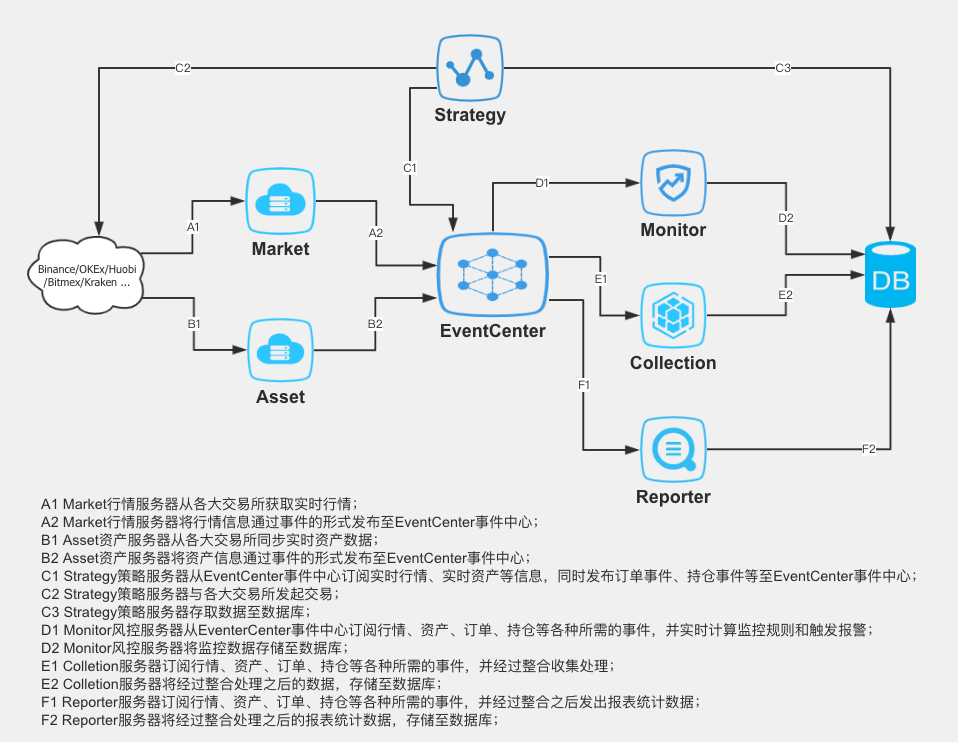
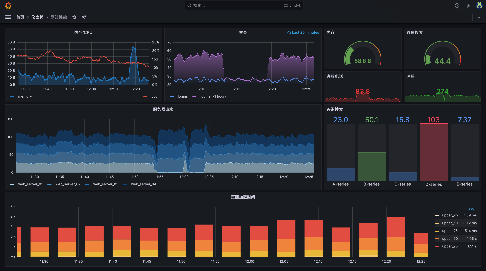

系统集成与实例演示
量化交易系统集成架构
graph TB
A[配置管理器] --> B[数据获取模块]
A --> C[策略引擎]
A --> D[风险管理模块]
A --> E[交易执行模块]
B --> F[数据预处理]
F --> G[技术指标计算]
G --> C
C --> H[信号生成器]
H --> I[策略评估器]
I --> D
D --> J[风险检查]
J --> K{风险通过?}
K -->|是| E
K -->|否| L[风险告警]
E --> M[订单管理]
M --> N[交易API]
N --> O[执行反馈]
O --> P[监控面板]
L --> P
G --> P
I --> P
style A fill:#e1f5fe
style P fill:#f3e5f5
style K fill:#fff3e0
完整交易策略示例：双均线系统

核心代码实现
#!/usr/bin/env python3
# -*- coding: utf-8 -*-
"""
量化交易系统 - 完整双均线策略示例
集成数据获取、策略计算、风险管理和交易执行
"""
import pandas as pd
import numpy as np
import yfinance as yf
from datetime import datetime, timedelta
import logging
import yaml
from typing import Dict, List, Optional
class QuantTradingSystem:
"""完整量化交易系统"""
def __init__(self, config_path: str):
"""初始化系统"""
self.config = self.load_config(config_path)
self.setup_logging()
self.data_manager = DataManager(self.config['data'])
self.strategy = DualMAStrategy(self.config['strategy'])
self.risk_manager = RiskManager(self.config['risk'])
self.executor = TradeExecutor(self.config['execution'])
def load_config(self, config_path: str) -> Dict:
"""加载配置文件"""
with open(config_path, 'r', encoding='utf-8') as f:
return yaml.safe_load(f)
def setup_logging(self):
"""设置日志系统"""
logging.basicConfig(
level=logging.INFO,
format='%(asctime)s - %(name)s - %(levelname)s - %(message)s',
handlers=[
logging.FileHandler('trading_system.log'),
logging.StreamHandler()
]
)
self.logger = logging.getLogger(__name__)
def run_strategy(self):
"""运行交易策略"""
try:
# 1. 数据获取与处理
data = self.data_manager.get_market_data()
processed_data = self.data_manager.process_data(data)
# 2. 策略信号生成
signals = self.strategy.generate_signals(processed_data)
# 3. 风险检查
validated_signals = self.risk_manager.validate_signals(signals)
# 4. 交易执行
if validated_signals:
self.executor.execute_trades(validated_signals)
# 5. 更新监控面板
self.update_monitoring_dashboard()
except Exception as e:
self.logger.error(f"策略运行错误: {e}")
class DualMAStrategy:
"""双均线交叉策略"""
def __init__(self, config: Dict):
self.short_window = config['short_window'] # 10
self.long_window = config['long_window'] # 30
self.threshold = config.get('threshold', 0.02) # 2%阈值
def generate_signals(self, data: pd.DataFrame) -> List[Dict]:
"""生成交易信号"""
signals = []
for symbol in data.columns.levels[1]:
symbol_data = data.xs(symbol, level=1, axis=1)
# 计算移动平均线
short_ma = symbol_data['Close'].rolling(self.short_window).mean()
long_ma = symbol_data['Close'].rolling(self.long_window).mean()
# 生成信号
current_short = short_ma.iloc[-1]
current_long = long_ma.iloc[-1]
prev_short = short_ma.iloc[-2]
prev_long = long_ma.iloc[-2]
# 金叉买入信号
if (prev_short <= prev_long and current_short > current_long and
(current_short - current_long) / current_long > self.threshold):
signals.append({
'symbol': symbol,
'action': 'buy',
'price': symbol_data['Close'].iloc[-1],
'timestamp': symbol_data.index[-1],
'confidence': min((current_short - current_long) / current_long, 0.1)
})
# 死叉卖出信号
elif (prev_short >= prev_long and current_short < current_long and
(current_long - current_short) / current_long > self.threshold):
signals.append({
'symbol': symbol,
'action': 'sell',
'price': symbol_data['Close'].iloc[-1],
'timestamp': symbol_data.index[-1],
'confidence': min((current_long - current_short) / current_long, 0.1)
})
return signals
# 配置文件示例 (config.yaml)
config_example = """
# 量化交易系统配置文件
data:
symbols: ['AAPL', 'MSFT', 'GOOGL', 'TSLA']
period: '1d'
interval: '1h'
strategy:
name: 'DualMA'
short_window: 10
long_window: 30
threshold: 0.02
risk:
max_position_size: 0.1 # 单个品种最大仓位10%
stop_loss: 0.05 # 5%止损
max_daily_loss: 0.02 # 单日最大亏损2%
execution:
order_type: 'market'
slippage: 0.001 # 0.1%滑点
commission: 0.001 # 0.1%手续费
"""系统启动与运行流程
启动步骤
1
环境检查与初始化
验证Python环境、依赖库版本、配置文件完整性
python -m pip install -r requirements.txt
2
配置文件加载
读取YAML配置，验证参数有效性，建立日志系统
python main.py --config=config/production.yaml
3
模块初始化
按序启动数据模块、策略引擎、风险管理和交易执行模块
4
系统运行监控
启动实时监控面板，开始策略执行循环

启动脚本示例
#!/bin/bash
# 量化交易系统启动脚本
echo "=== 量化交易系统启动 ==="
# 1. 环境检查
echo "检查Python环境..."
python --version
if [ $? -ne 0 ]; then
echo "错误: Python环境未正确安装"
exit 1
fi
# 2. 安装依赖
echo "安装依赖包..."
pip install -r requirements.txt
# 3. 配置检查
echo "验证配置文件..."
python -c "import yaml; yaml.safe_load(open('config/production.yaml'))"
# 4. 启动系统
echo "启动量化交易系统..."
nohup python main.py --config=config/production.yaml > system.log 2>&1 &
echo "系统已启动，PID: $!"
echo "日志文件: system.log"
echo "监控地址: http://localhost:8080/dashboard"实时监控与状态管理

系统健康状态
- • CPU使用率监控
- • 内存占用情况
- • 网络连接状态
- • 磁盘空间预警
交易监控指标
- • 实时盈亏统计
- • 持仓分布图表
- • 交易频率分析
- • 策略表现评估
风险监控预警
- • VaR风险值监控
- • 最大回撤跟踪
- • 仓位风险预警
- • 异常交易检测
监控面板核心功能
实时数据展示
- • WebSocket实时数据推送
- • 多维度图表可视化
- • 自定义监控面板
- • 移动端适配支持
告警与通知
- • 多级别告警机制
- • 邮件/短信通知
- • 微信/钉钉集成
- • 告警历史记录
系统部署与维护建议
部署环境推荐
维护与优化
定期维护
- • 每日日志分析和清理
- • 每周系统性能评估
- • 每月策略回测更新
安全防护
- • SSL证书配置
- • 防火墙规则设置
- • 定期安全扫描
性能优化
- • 数据库查询优化
- • 缓存策略改进
- • 代码性能分析
下一步发展方向
AI智能化
集成机器学习模型，实现策略自动优化和智能风控
分布式架构
构建微服务架构，支持高并发和大规模数据处理
移动端支持
开发移动端应用，随时随地监控交易系统运行状态